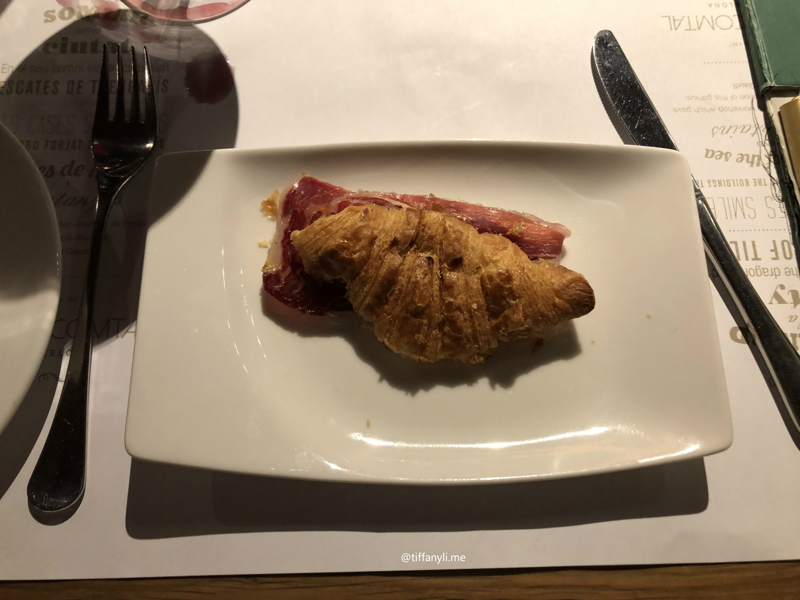

Paella at Micu Maku
Written on: March 7, 2020
My recommendations for what to eat in Barcelona from my trip to this beautiful city (August 17 - August 21, 2019).
What is the first Spanish food that comes up to your mind? For most people, it would probably be Spanish Seafood Paella. This is what I went to Micu Maku for. By the time I got to Bareclona from my train from Paris, I was looking for something filling to eat for dinner, and Paella instantly came across my mind. I looked it up and Micu Maku seemed to have delicious and filling Paella that can satisfy my craving. I went at around 7:30pm, and the store was not busy at all. The Paella was delicious, portion size was big enough for two people to share. The price is slightly on the pricey side, but I think the taste and portion justified the cost.
Paella at Micu Maku
Of course when I was in Barcelona, I have to take advantage of the city's proximity to the sea and try out the seafood there. I lined up before it opened at 8pm because from the guide I read, it said to line up beforehand since the restaurant gets super busy and crowded. The way it worked in this restaurant was that you line up and one by one, you make your order of which seadfood and how many you want at the counter where all the raw seafood were displayed at. Then it gets weighted, and you pay up front (you can also order extra sauce or other sidedishes at the cashier). Then, the staff would take the seafood you ordered to the kitchen and cook it for you. There are dining area inside, and you would go and pick up your food when you see your order number show up at the big screen where the pick-up area is. The food is super fresh, the way they cookied really enhanced the seafood flavour. I think the food taste good already, so ordering an extra sauce to go with it is not necessary. The dinner came to be around 80 Euros if I remember correctly.

Shrimps at La Paradeta
This resturant was my favourite in Barcelona.
It serves small dishes that are delicious and amazing. I did ask the server on what he recommends, and the food I got based on
his recommendations are all amazing! I did add a Sangria on the side (note: don't drink the entire cup by yourself if you tend to have Asian Glow, or else
you can look like a freshly picked tomato). My personal favourites are the croissant with jambon, the Foie Gras on baguette, the cod in Aioli sauce, and the seafood platter.
The total for this meal came down to around 40 Euros in total, and it was for two people, which is a great price for how much we ate there.

Croissant with Jambon at Ciutat Comtal